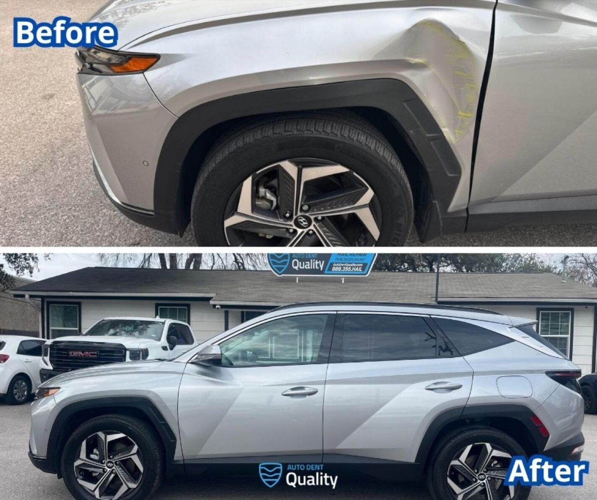

Hail and paintless dent repair
Dents are worked out from behind the panel. No body filler, no repaint, so the factory paint stays.
- Auto hail damage repair
- Paintless dent repair
- Insurance claim help
- Deductible help on hail repairs
Auto Dent Quality · Manor
Auto Dent Quality serves Manor from Austin.
Auto Dent Quality is based in Austin and works with customers from Manor. Call (512) 925-7262 to ask about timing and directions.

Dents are worked out from behind the panel. No body filler, no repaint, so the factory paint stays.

Parking lot marks and small dents removed with precision tools. No repaint needed.

Collision repair and refinishing with computerized colour matching and OEM-approved paint, done in a paint booth.
417 Google reviews
I highly recommend Auto Dent Quality! They did a phenomenal job repairing my BMW X5 hail damage and I couldn’t be happier with the results! They even helped me with my rental reservation and drop off. The quality of their work, attention to detail, and professionalism were outstanding. My car looks amazing, like the damage never happened.
Exceptional service from start to finish! My brand-new Tundra had only about 100 miles on it when the driver’s door and side mirror were damaged in a hit-and-run. I was understandably concerned, but Auto Dent Quality made the entire repair process easy and stress-free. They did an excellent job with the repairs, kept me updated throughout the entire process, and completed everything in a very timely manner.
Very pleasant experience! Love how my car has turned out. The owner went the extra mile to ensure I was satisfied with the work provided. Thank you again !
My first time I ever go through this process. I can say that I do definitely recommend them. Cory is very friendly and he guided me through the process. They even detailed my car inside and outside! I would say I wasn’t a fan of the paint job but thats just me being picky and a painter myself lol.
Call or send a message for a free estimate.